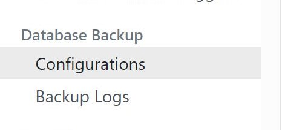
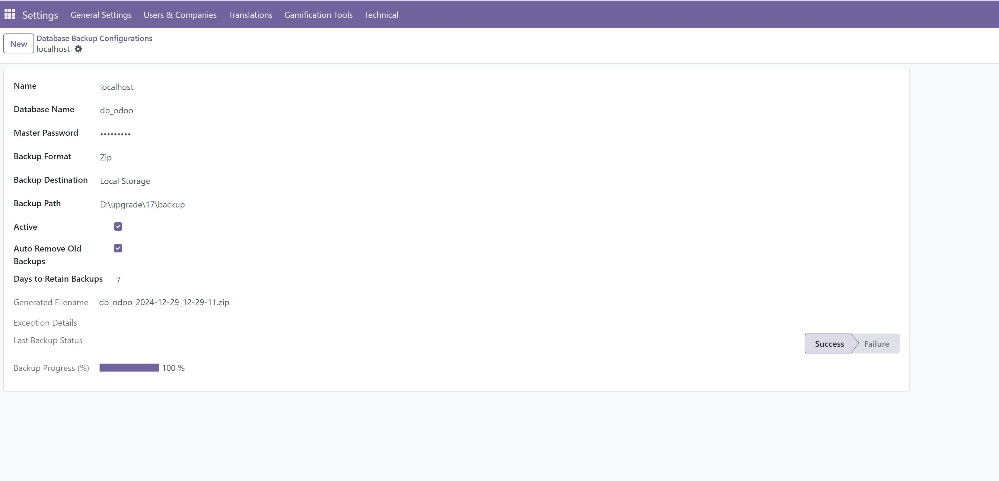

Navigate to Settings → Technical → Backup Configuration to manage your database backup settings. This menu allows you to create, edit, and review backup configurations.

Create New Database Backup Configuration
To configure a new backup:
Enter the database name and master password.
Specify the backup type (ZIP or DUMP) and the backup destination.
Provide the backup directory path. If the directory doesn't exist, it will be created automatically.

Key Features
The module provides:
**Real-time backup progress tracking.**
**Automatic removal of old backups based on retention policies.**